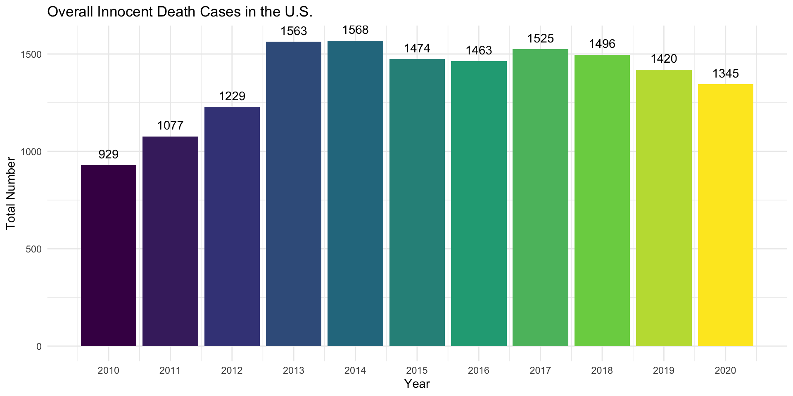
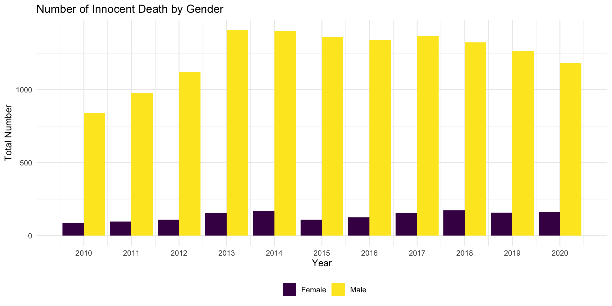
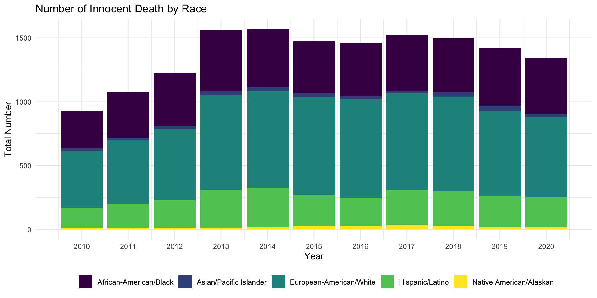
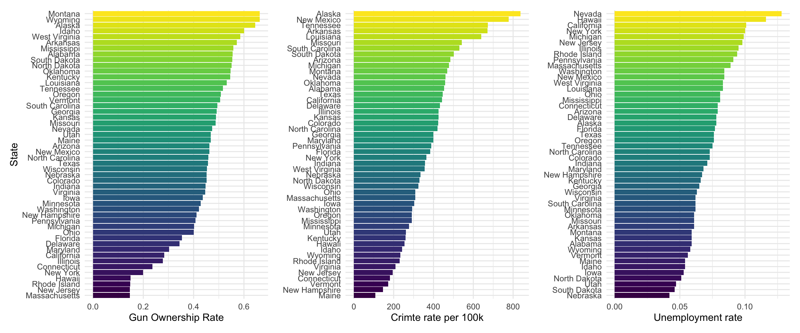
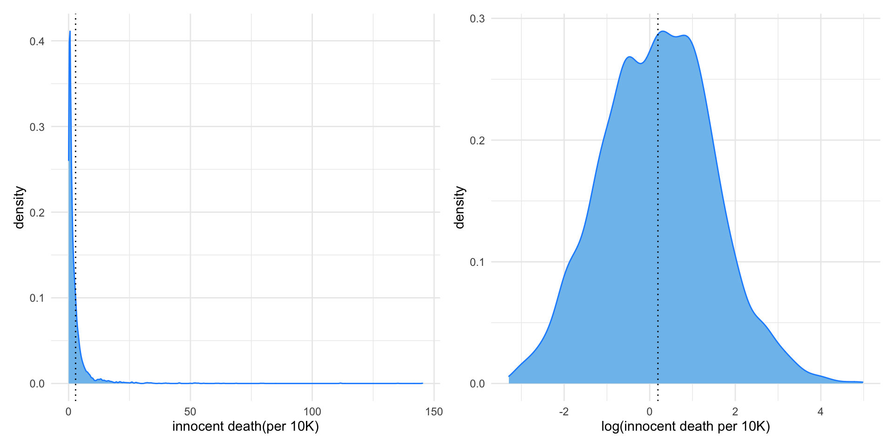
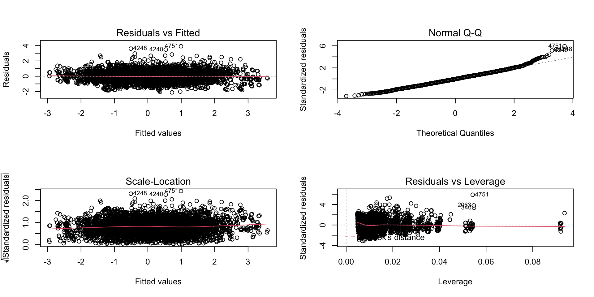
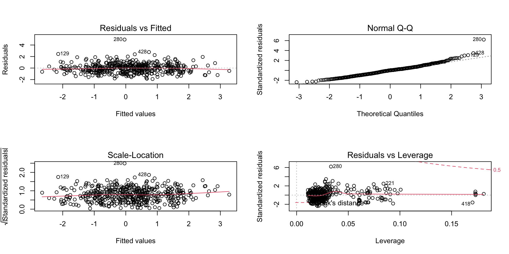

Final Report
Hening Cui, Jialiang Hua, Congyang Xie, Wenhan Bao, Qihang Wu
Dec 9 2021
Click here and go back to our index page…
Motivation
In the wake of George Floyd’s murder, several protests arose across the nation. This motivates us to investigate innocent deaths under police violence and the association of confounders with the excessive police force. Although the majority of encounters that meet death with law enforcement officials present a lethal threat to officers or society, there are still people involved in the police action that meets death with a quantity not to be ignored. This project analyses the data on people involved in a police operation and results in fatalities. Despite the assessment of the overuse of police force across geographical factors, this project also focuses on socioeconomic factors, political factors, and others.
Initial Questions
- What is the trend of innocent killing by police overtime in the U.S.
- Which state has higher rates of gun ownership, crime rates, and unemployment rates than others.
- Whether the factors above have potential correlations with the number of innocent killings in the U.S.
Data
The main dataset for our project is from Kaggle and to make a more comprehensive analysis, we also obtained other datasets from sources including the World Population Review, Statista, the U.S. Bureau of Labor Statistics, and the U.S. Census Bureau, etc. Here, we only analyze the cases between 2010 and 2020 to make this report have both realistic social significance and far-reaching historical significance, even though the main dataset we have contains a wider time frame.
A brief description of data cleaning:
- Use reasonable variables and select key variables for further analysis;
- Drop NA values in some columns;
- The gender with
Transgender, race withMiddle EasternandRace Unspecified, and age under one are not considered in this analysis; - Do the following mutations:
- Replace NA values in the
agewith the mean in each group - Remove the comma in a value of
latitude value - Normalize several similar terms in
highest_force - Convert the data type of some variables and create a new variable
age_bin
- Replace NA values in the
- Rearrange data;
- Combine this main data with other data if needed
Exploratory Data Analysis
Innocent Death Rate per 100k population
The following image shows the innocent death rate per 100k population from 2010 to 2020 in each state of the U.S.
US Total
The total amount of innocent death across 50 states by year in the U.S. from 2010 to 2020 is shown as follows. This graph illustrates that the number of cases has increased year by year and stabilized after 2013. It is reassuring that there may be a downward trend in this total count after 2017.

Sex
The graph below shows a huge difference in the total amount of innocent killings between men and women. These unfortunate cases generally occur in the male group, although the proportion of male and female remains roughly the same from 2010 to 2020. 
Age
The 55-84 age group accounts for the largest proportion among all age groups. 
Race and ethicity
Although the total number of innocent death changes every year, the European-American/White race group will consistently account for the largest proportion and comes the African-American/Black group. 
Gun Ownership, Crime Rate, and Unemployment Rate
The following three graphs show the rate of gun ownership rate, crime, and unemployment in all 50 states in the U.S.

Statistical Analysis
For statistical analysis, we come up with two regression models. The first one contains variables including state, age, gender, and race based on the data from year 2010 to 2020, while the second one considers not only the above predictors but also the other three: gun ownership, crime rate, and unemployment rate in 2020. Since we believe that all these three factors may somehow connect with the rate of innocent killings by the police in the U.S. For instance, the police might be armed with more advanced weapons in the states where the crime rate is high, which will lead to a higher rate of innocent killings in these regions.
The following graph is the distribution of the target variable innocent_kill_per100k, we can see that the distribution has nothing to do with the normal, therefore we need to perform a transformation. 
After transforming the variable innocent_kill_per100k, we could look at the plot in the left where the distribution is much more normal than before which satisfy the assumption of normality.
Results
By transformation above, the formula is below:
\[ log(innocent \space death \space per \space 100k) = \beta_0 + \beta_1year + \beta_2state + \beta_3 age + \beta_4 gender + \beta_5 race\] Based on the summary and statistics which you could see in the part of regression-model 1, we could conclude that all all predictor are significant in statistical aspect although some levels in state have no significant association.
| r.squared | adj.r.squared | sigma | statistic | p.value | df | df.residual | nobs |
|---|---|---|---|---|---|---|---|
| 0.7244886 | 0.7211087 | 0.6819863 | 214.3573 | 0 | 60 | 4891 | 4952 |
When concentrating on the table of R.squared, we could figure out that \(R^2\) value is 0.72 which means that 72% of the variability in the outcome data can be explained by the model, especially if R-squared value r > 0.7 this value is generally considered strong effect size (Ref:Moore, D. S., Notz, W. I, & Flinger, M. A. (2013). The basic practice of statistics (6th ed.))
In order to further make sure the accuracy of model 1 and the homoscedasticity of residual, we draw four plots which are Residuals vs Fitted, Normal QQ, Scale-Location and Residuals vs Leverage respectively. When looking at the plots, we could figure out that the homoscedasticity of residual is proved.

In addition to the model above, we are still eager to dig out another potential predictors for innocent death so that we fitted another model by adding three variables (Gun ownership rate, Crime rate per 100K and unemployment rate) and the model 2 we are going to fit is where we drop the highly potential correlated variable (State) for avoiding collinearity:
\[ log(innocent \space death \space per \space 100k) = \beta_0 + \beta_1 age + \beta_2 gender + \beta_3 race + \beta_4Gun \space ownership \space rate\] \[ + \beta_5Crime \space rate(per \space 100K) + \beta_6 Unemployment \space rate\]| r.squared | adj.r.squared | sigma | statistic | p.value | df | df.residual | nobs |
|---|---|---|---|---|---|---|---|
| 0.6312087 | 0.6209425 | 0.811512 | 61.48452 | 0 | 13 | 467 | 481 |
When concentrating on the table of R.squared, we could figure out that adjusted \(R^2\) value is 0.62 which means that 62% of the variability in the outcome data can be explained by the model so that this value is generally considered a Moderate effect size and the fit is not as good as model1. If R-squared value 0.5 < r < 0.7 this value is generally considered a Moderate effect size.
For model 2, we also draw four plots to prove the homoscedasticity of residual and we could find that the multiple linear regression fits not as good as model 1.

Conclusion
Our EDA and first regression model indicates that all our main predictor(year, state, age, gender, race) are statistically significant although some levels in state are not. This indicates that there indeed are group differences by year, age, gender, race and most of the states regarding the innocent death by police. Our second regression model investigates more potential predictors of innocent deaths and their association. We found that there are significant association between innocent deaths rate and gun ownership rate as well as unemployment rate. The finding matches what we have proposed mostly, except that the crime rate are not statistically significant in the model we built.
Discussion
Overall, some of our findings are consistent with what we had originally hypothesized and some are not. Firstly, The overall trend of innocent death cases shows a tendency of rising until 2014 and then falling slightly. We found a shooting in 2014, which caused great public concern and government action, may account for the pattern. Secondly, male takes up a larger proportion of innocent death compared with female. This matches what we had hypothesized as higher crime rate and aggressivity of male than female. Thirdly, there are statistically significant associations between rate of innocent death by police and year, age, gender, race and states from our regression model.
Since crime rate, gun ownership rate and unemployment rate are associated with state variable, we removed the state variable in our second model to avoid collinearity. The adjusted \(R^2\) value for the second model is 0.62, which is considered a moderate effect size and is not as good as model 1. The result shows significant association between innocent death rate and gun ownership rate as well as unemployment rate, which is consistent with what was expected. However, interestingly, the the crime rate does not show a statistically significant association with innocent death rate, which is not in line with our expectation. We thought this could have potentially been due to other factors such as educational level, income level distorting the association. We are unable to dig into this and it needs further investigation.
A strength of this study is that the main dataset contains abundant data points and many variables, which gives us lots of chance to explore the details and the trends behind the data. Meanwhile, there are many limitations that need to be awared. Firstly, we used combined datasets for analyses. There might be potential inconsistency cause by combining different data sources, which may result in bias in our results. Secondly, there may be other factors or latent factors influencing innocent death rate that we haven’t considered and put into our model. A better model might be built considering other factors such as educational level, income level and so on.
Contribution
Congyang Xie was mainly responsible for dataset finding and aesthetic modification of the plots. Wenhan Bao and Qihang Wu were mainly responsible for the Data cleaning, EDA, Regression, Model Selection and analyses. Qihang also contributed to the organization of the whole project. Hening Cui was mainly responsible for further data visualization such as the animation of the trend plot, the shiny app. Jialiang Hua was mainly responsible for the organization of the final report and website building. We discussed the final report and recorded the videos together. All our members engaged in the project actively.